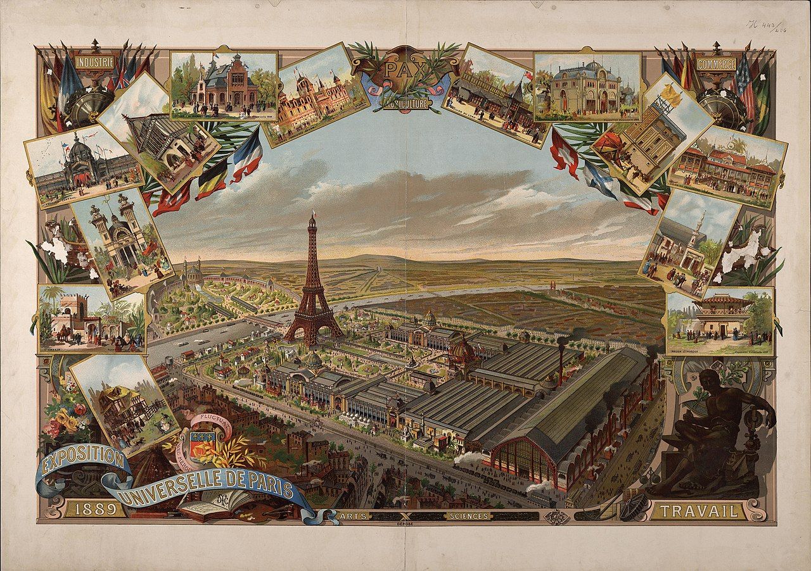

La Seconda Rivoluzione Industriale, iniziata negli ultimi due decenni del XIX secolo, segnò una svolta epocale nello
sviluppo tecnologico e produttivo.
Fu caratterizzata dall'introduzione di nuove
fonti di energia, come l'elettricità, e dall'espansione di settori innovativi, tra cui
l'industria chimica e meccanica.
L'invenzione del
dinamò rese possibile trasformare l'energia
meccanica in elettricità, aprendo la strada alla costruzione delle prime centrali
elettriche, come quella inaugurata a New York. Questi progressi permisero lo sviluppo di
apparecchiature e
infrastrutture fondamentali, come le
linee ferroviarie elettrificate, i sistemi di trasporto urbano e i primi impianti di illuminazione pubblica, che contribuirono a
trasformare le città.
L'
elettricità rivoluzionò il mondo industriale grazie alla sua versatilità e facilità d'uso: poteva essere trasportata su lunghe distanze e convertita
in luce, calore e movimento. Questo permise l'introduzione del
motore elettrico, che sostituì il motore a vapore, trasformando radicalmente il modo di
produrre beni e riducendo la dipendenza dai
combustibili fossili.
Parallelamente, l'
industria chimica aprì nuove possibilità con la creazione di gas per l'
illuminazione,
cementi,
coloranti,
ammoniaca,
plastica e
fertilizzanti, influenzando anche l'agricoltura, l'architettura e il design urbano. Questi sviluppi migliorarono le condizioni di vita e permisero una
maggiore industrializzazione dell'agricoltura, aumentando la produttività alimentare e favorendo l'urbanizzazione.
Un'innovazione cruciale fu il
motore a combustione interna, che rivoluzionò il trasporto su terra e mare, rendendo più rapidi e accessibili gli spostamenti.
L'avvento dei veicoli a motore, come le
automobili, favorì la crescita urbana e la nascita di nuove
infrastrutture stradali, creando una rete di trasporti su scala globale.
Questi progressi non solo modificarono i processi produttivi, ma trasformarono anche la società, le relazioni sociali e lo stile di vita. L'emergere di
una classe media più ampia, il cambiamento delle dinamiche urbane e la diffusione di nuovi prodotti e servizi contribuirono a preparare le società
occidentali all'ingresso nel XX secolo e all'
era della modernità.


 During the Second Industrial Revolution, Britain played a key role in the triangular trade. British manufactured goods were sold in West Africa in exchange for enslaved Africans, who were sent to America to work on plantations producing sugar, tobacco, and cotton. These raw materials were then exported back to Britain, generating enormous wealth. A significant amount of this wealth was invested in new infrastructure, inventions, and housing. Although Britain abolished slavery in 1834, by 1860 much of the cotton imported from America was still produced by enslaved labor, highlighting the continued reliance on slave labor in the global economy.
During the Second Industrial Revolution, Britain played a key role in the triangular trade. British manufactured goods were sold in West Africa in exchange for enslaved Africans, who were sent to America to work on plantations producing sugar, tobacco, and cotton. These raw materials were then exported back to Britain, generating enormous wealth. A significant amount of this wealth was invested in new infrastructure, inventions, and housing. Although Britain abolished slavery in 1834, by 1860 much of the cotton imported from America was still produced by enslaved labor, highlighting the continued reliance on slave labor in the global economy.